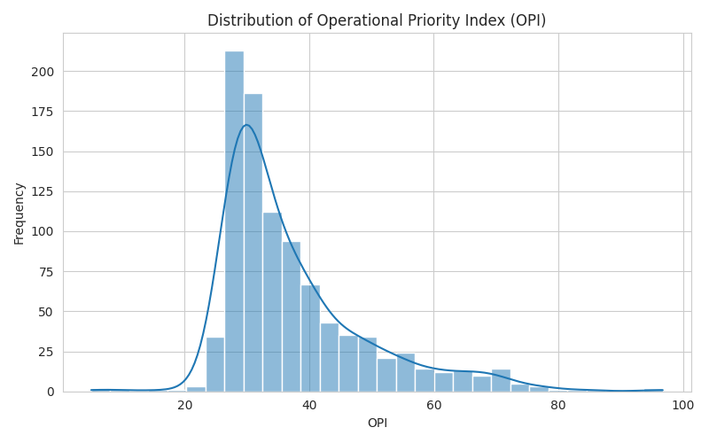

National Intelligence Overview
Prioritizing resource allocation across 700+ operational nodes.
Active Nodes
...
National OPI Median
...
Strategic Archetypes
06
Operational Priority Hierarchy
| Global Rank | District Node | State Cluster | OPI Index | Tactical Status | Action |
|---|---|---|---|---|---|
| Synchronizing Node Data... | |||||
Strategic Peer Discovery
Identify operationally similar regions to benchmark deployment strategies.
Semantic Methodology:
Matches are retrieved by calculating the Euclidean Distance between nodes in a high-dimensional feature space. This ensures peers are operationally identical, even if geographically distant.
National Priority Distribution

The OPI distribution guides the baseline for hardware allocation thresholds.